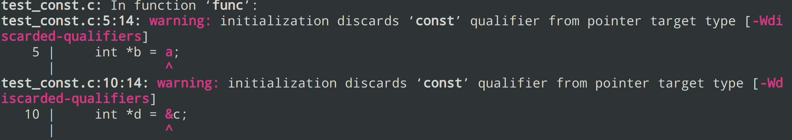
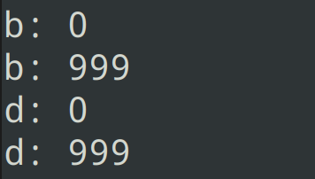
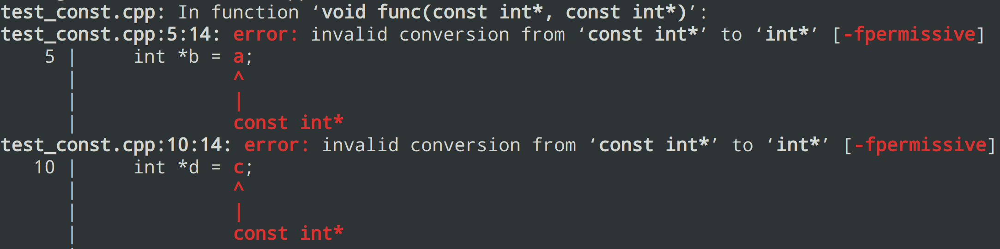

偶然间发现C可以丢弃const的限定符，于是对几种情况进行了尝试和总结
问题代码如下：
1 | /* test.c |
使用gcc对test.c进行编译：gcc -o test test.c
会发现编译器只在对应的地方报了两条Warning提示初始化时丢弃了const限定符：
1 | warning: initialization discards ‘const’ qualifier from pointer target type [-Wdiscarded-qualifiers] |

运行结果：

可见传入的const变量确确实实被修改了
然而让我们将文件名修改为test.cpp，再用gcc尝试编译时就发现会直接报错了，提示将const int*转换成int*是不允许的
1 | error: invalid conversion from ‘const int*’ to ‘int*’ [-fpermissive] |

仅仅改了名字，没有修改内容居然引起了不同的结果，怀疑是由于cpp后缀导致使用了g++进行处理，于是对几种组合情况进行了简单的测试
| .cpp后缀 | .c后缀 | |
|---|---|---|
| gcc编译 | Error | Warning |
| g++编译 | Error | Error |
测试使用的gcc版本：9.3.0
可见只有最开始尝试的情况，也就是用gcc编译c文件会出现这样的情况，都说g++编译c文件会调用gcc，现在看来这一点也有待商榷
总之，以后写C代码要对这一点多加注意，毕竟项目中一个warning很容易被埋没